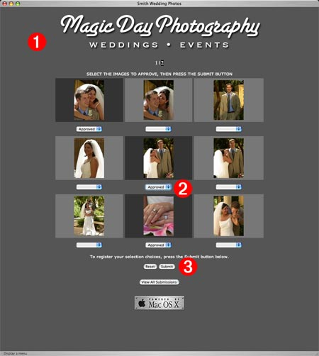
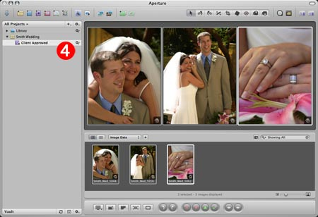
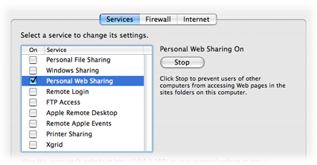
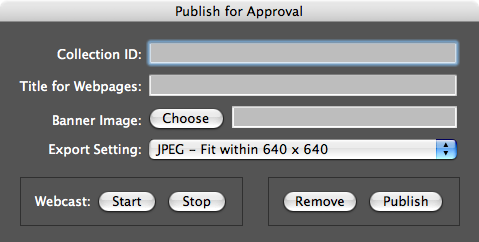
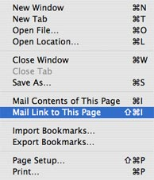
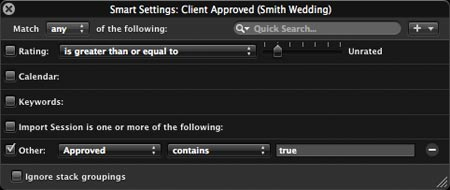

Publish for Approval v1.5
Finally, a no-hassle, easy way to for customers to approve images remotely over the internet. With a single button-click, you can web-publish selected images and know exactly which ones the customer wants to use — with their choices automatically displayed for you in Aperture. No special engineering or web-coding is required, it's literally a one-button solution that even the least computer-savy photographer can use.
How it Works
The Publish for Approval system uses the built-in web sharing abilities of Mac OS X, and the power of AppleScript, to create and display webpages, containing your images, to the client (1). On the webpage, the client selects the images they approve (2), and clicks a button to submit their choices to you (3). Immediately, their selections are displayed in a Smart Album in your Aperture project (4)—on your computer!


Setup
The Publish for Approval system uses the built-in web-hosting abilities of your computer, to serve webpages from your computer over the Internet for your clients to view. Naturally, this requires that the computer containing your Aperture library be connected to the Internet, preferably via ethernet to a cable or DSL modem. If your computer is connected to the Internet via a wireless network, see the sidebar on how to enable your network to publish to the Internet.
Follow these simple steps to setup the Publish for Approval system:
- Download and unpack the archive that contains the Publish for Approval application and related banner template files.
- Create a banner image for your webpages using the templates included with the Publish for Approval system. You can create multiple banners as each set of published client images can have its own banner. Be sure to save the banner images in PNG format.
- Turn on Personal Web Sharing in the Services tab of the Sharing system preference.

Publish a Photo Collection
Follow these simple steps to web-publish your images:
- Within an Aperture project, select the images you wish to publish.
- Launch the Publish for Approval application. The application will install any resources it requires. Once done with its initial resource installation, the following window will appear in Aperture:

- In the first text field in the application window, enter a unique ID for the published content, something like: smith-wed-01, or argon-art-23. Avoid using spaces or special characters in the ID. Note that you can publish multiple collections for any client, however you can only use an image in one published collection.
- In the second text field, enter the title for the webpages that will be generated to display the images you selected. Although spaces are allowed, avoid using other special characters in the title.
- Click the Choose button, and in the forthcoming dialog, select one of the banner images you created to use as the banner for the published webpages.
- Select an Aperture Export Setting from the popup list to determine the size and format of the published images. Usually images sized smaller than 900 pixels work fine. You may wish to create a custom export setting that also inserts a watermark into the published image.
- Click the Publish button to start the process of exporting the images, and generating and installing the webpages into your computer's WebServer directory. During export, the application window will display a progress bar showing the status of the publishing process.
- Once the publishing process has completed, the collection home page will be opened in Safari on your computer. If the results are to your liking, send your client a link to the home page by choosing Mail Link to This Page from the Safari File menu:

- When the client clicks on the link in your message, they will be taken to the home page for the published collection. They can then browse and approve images from the collection. In order for you to see what images they have chosen, create a new Smart Album in the published project that will display images whose custom metadata tag Approved has a value of true.
When you select this Smart Album in Aperture, you will see the images they have chosen. Note that the Smart Album does not update dynamically. You must refresh its contents by selecting another project or album and then selecting the Smart Album again.

Webcasting Options
If you want to stop serving published collections, click the Stop button in the Publish for Approval application, and the ACGI Dispatcher application and its support applets will quit. In addition, the Sharing system preference pane will be displayed for you turn off Personal Web Sharing.
If you want to re-enable serving of already published image collections, click the Start button in the Publish for Approval application. If Personal Web Sharing is off, the Sharing system preference pane will be displayed for you turn it on.
Un-Publishing
If you wish to permanently remove a published collection, launch the Publish for Approval application and click the Remove button to be presented with a list of the currently active collections. Select the collections to remove, and the folders containing the images and webpages will be moved to the trash.